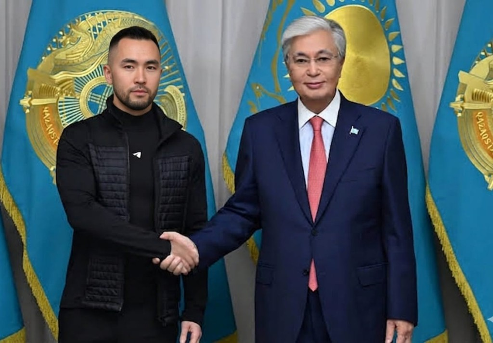

Государственное признание · 2025
Сергей Макаров удостоен официальной благодарности за многолетний вклад в возврат средств гражданам, пострадавшим от недобросовестных участников финансового рынка, и за выстраивание практики взаимодействия с государственным регулятором — Агентством по регулированию и развитию финансового рынка.

🏅 Благодарственное письмо
За вклад в защиту прав потребителей финансовых услуг
и содействие восстановлению справедливости
В 2025 году по итогам работы с крупными кейсами — возврат средств клиентам на суммы свыше сотен миллионов тенге и координация с Агентством РК по регулированию и развитию финансового рынка (АРРФР) — деятельность Сергея Макарова была отмечена на уровне государства.
На церемонии в Астане, посвящённой защите прав граждан на финансовом рынке, представители правоохранительного и надзорного блока отметили практику «гонорара успеха»: клиент платит юристу только после фактического зачисления денег — это снижает число повторных обращений и повышает доверие к правовым механизмам.
«Награда — не про личную славу. Это сигнал пострадавшим: государство видит проблему финансового мошенничества и поддерживает тех, кто возвращает деньги законно. Я продолжаю работать по модели гонорара успеха — вы платите только когда средства уже у вас на счёте.»
Для людей, которые потеряли деньги, награда — дополнительное подтверждение, что мой подход признан на государственном уровне. Я по-прежнему веду дела онлайн по всему Казахстану, взаимодействую с АРРФР и международным контуром GlobalSafe Finance, но первая консультация остаётся бесплатной — 15 минут, без обязательств.